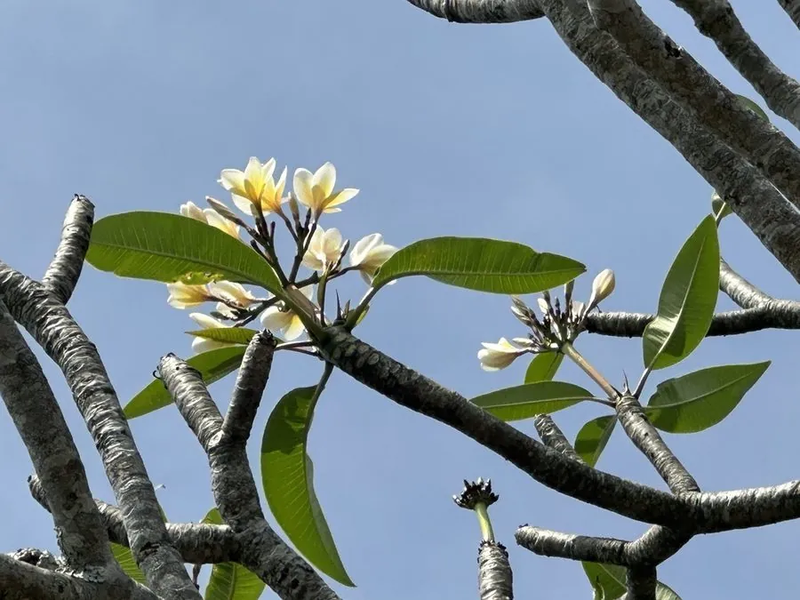

灌木与花木 · 植物界
鸡蛋花 Plumeria rubra

热带地区常见的落叶小乔木，花朵外白内黄、形似鸡蛋，香气清雅，是东南亚寺庙与庭院中常见的花木。
- 分类
- 门被子植物门纲木兰纲目龙胆目科夹竹桃科属鸡蛋花属
- 栖息环境
- 海拔 800 米以下的热带地区，喜高温多湿、光照充足，耐旱
- 地理分布
- 原产墨西哥、中美洲及南美洲北部，中国华南地区广泛栽培
- 保护级别
- 暂无评估；中国未列入国家重点保护野生植物名录
物种志
鸡蛋花为落叶小乔木，高可达 8 m，树皮灰褐色，枝条粗壮肉质；叶片互生，长椭圆形，叶脉明显。花期 5–10 月，聚伞花序顶生，花冠漏斗状、5 裂，花瓣外面白色、内面基部黄色，形似鸡蛋，故得名，香气清雅；蓇葖果长角状，成熟时开裂，种子具翅，但栽培条件下少见结果。
鸡蛋花原产墨西哥、中美洲及南美洲北部，中国广东、广西、福建、海南、云南等地栽培，喜高温多湿、光照充足，耐旱、不耐寒，适宜疏松肥沃、排水良好的土壤。花可提取香精，用于制作化妆品与高级香水；花可泡茶、晒干入药，有清热利湿之效；树皮与乳汁有一定毒性，需注意。鸡蛋花在老挝被视为国花，在东南亚佛教寺庙中常被种植，是热带地区极具代表性的观赏花木。
形态与习性
- 株高可达 8 m，枝条粗壮肉质
- 花期5–10 月，花外白内黄
- 果期栽培条件下少见结实
- 光照喜光，不耐长期荫蔽
- 水分耐旱，怕积水
- 土壤疏松肥沃、排水良好的壤土
- 主要用途庭院与寺庙观赏、花提取香精、花晒干入药
趣味知识
- 鸡蛋花的花瓣外面白色、内面基部黄色，形似切开的鸡蛋，因此得名。
- 鸡蛋花是老挝的国花，在东南亚佛教寺庙中常被种植。
- 鸡蛋花的花可提取香精，用于制作化妆品与高级香水。
- 鸡蛋花树皮与乳汁有一定毒性，观赏时不要随意折断或接触伤口。